SOUNDING TYPOGRAPHY BRIEF
SOUNDING TYPOGRAPHY BRIEF *Supervised by Rick Milovanovic*
This form of print media is something that I would love to produce more of in the future. Designing record covers for the independent music scene is an area of interest I would love to immerse my creative practice in as a designer.
 SOUNDING TYPOGRAPHY BRIEF
SOUNDING TYPOGRAPHY BRIEF *Supervised by Rick Milovanovic*
Baked Beans are an underground garage psychedelic rock band from Geelong. The simple yet sloppy quality to my design replicates their sound visually. This was expressed through the loose but playful DIY typography, messy aesthetic and bright colours.
 ‘AUSTRALIA WITHOUT THE ARTS IS JUST ULI...IT DOESN'T MAKE SENSE’ CAMPAIGN
‘AUSTRALIA WITHOUT THE ARTS IS JUST ULI...IT DOESN'T MAKE SENSE’ CAMPAIGN *Supervised by Alex Margetic*
My campaign is spread across the two distributions of A0 sized risograph posters and A4 sized flyers, with a strong punk aesthetic. This attacks the Federal Government for having no support for the arts, as well as informing the public of the recent government arts funding cuts. My slogan for my campaign was inspired by the slogan typically seen in street art contexts, 'The Earth without Art is just Eh'. I felt this best encapsulated the expression of the campaign about how important the arts is to Australia's cultural identity, tourism and economy.
 ‘AUSTRALIA WITHOUT THE ARTS IS JUST ULI...IT DOESN'T MAKE SENSE’ CAMPAIGN
‘AUSTRALIA WITHOUT THE ARTS IS JUST ULI...IT DOESN'T MAKE SENSE’ CAMPAIGN *Supervised by Alex Margetic*
I was influenced by designer Jamie Reid’s use of collage design as well as the application of simple bold colours for both of my forms of distribution. Jamie Reid often uses objects, such as ski masks, to obscure politicians/celebrities' faces in his work. I incorporated this into my own work by adding a ski mask over the current Prime Minister Scott Morrison’s face. This reinforced the punk aesthetic, while defacing the Prime Minster through my design.
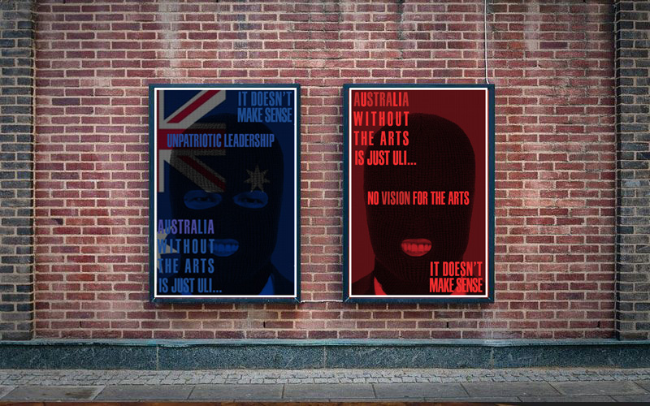
‘AUSTRALIA WITHOUT THE ARTS IS JUST ULI...IT DOESN'T MAKE SENSE’ CAMPAIGN
*Supervised by Alex Margetic*
My processes of creating my posters and flyers were through creating my collage on Photoshop and then exporting each design as a Bitmap file. This created the grungy punk aesthetic to my posters, as well as creating the distorted yet still punk in appearance flyer designs. My typeface of choice was Schmalfette, which further provided me with the ability to create and design poster and flyer designs with a strong punk aesthetic.
*Supervised by Alex Margetic*
My processes of creating my posters and flyers were through creating my collage on Photoshop and then exporting each design as a Bitmap file. This created the grungy punk aesthetic to my posters, as well as creating the distorted yet still punk in appearance flyer designs. My typeface of choice was Schmalfette, which further provided me with the ability to create and design poster and flyer designs with a strong punk aesthetic.
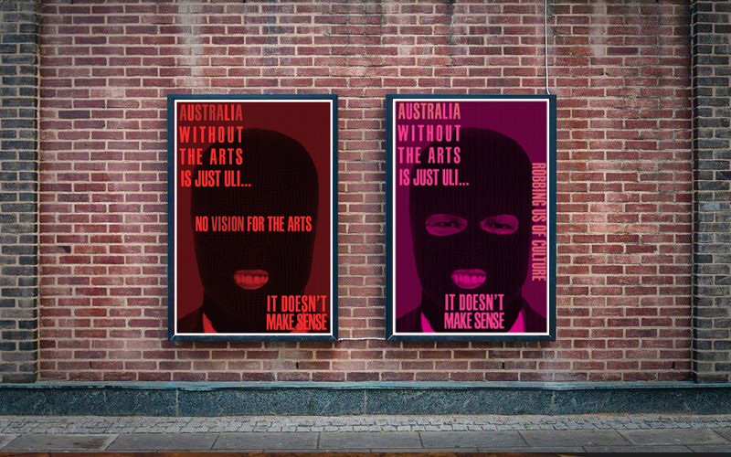
‘AUSTRALIA WITHOUT THE ARTS IS JUST ULI...IT DOESN'T MAKE SENSE’ CAMPAIGN
*Supervised by Alex Margetic*
My intention for distributing my posters and flyers is to display them throughout creative parts of Melbourne (such as the Collingwood arts precinct). These will show support for affected stakeholders of the issue, as well as providing affected stakeholders with access to my campaign.
*Supervised by Alex Margetic*
My intention for distributing my posters and flyers is to display them throughout creative parts of Melbourne (such as the Collingwood arts precinct). These will show support for affected stakeholders of the issue, as well as providing affected stakeholders with access to my campaign.
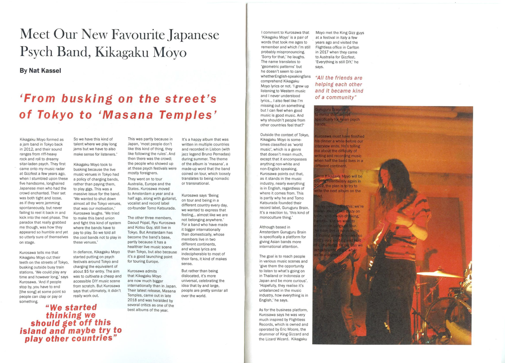
MONSTER CHILDREN NEWSPAPER
*Supervised by Dianne Elderton*
This publication is a newspaper of content sourced from 'Monster Children Magazine'. This publication was printed on a low-quality paper stock, to give the publication a newspaper look and feel as well as reinforcing the grungy DIY aesthetic of some of the articles within the publication.
*Supervised by Dianne Elderton*
This publication is a newspaper of content sourced from 'Monster Children Magazine'. This publication was printed on a low-quality paper stock, to give the publication a newspaper look and feel as well as reinforcing the grungy DIY aesthetic of some of the articles within the publication.
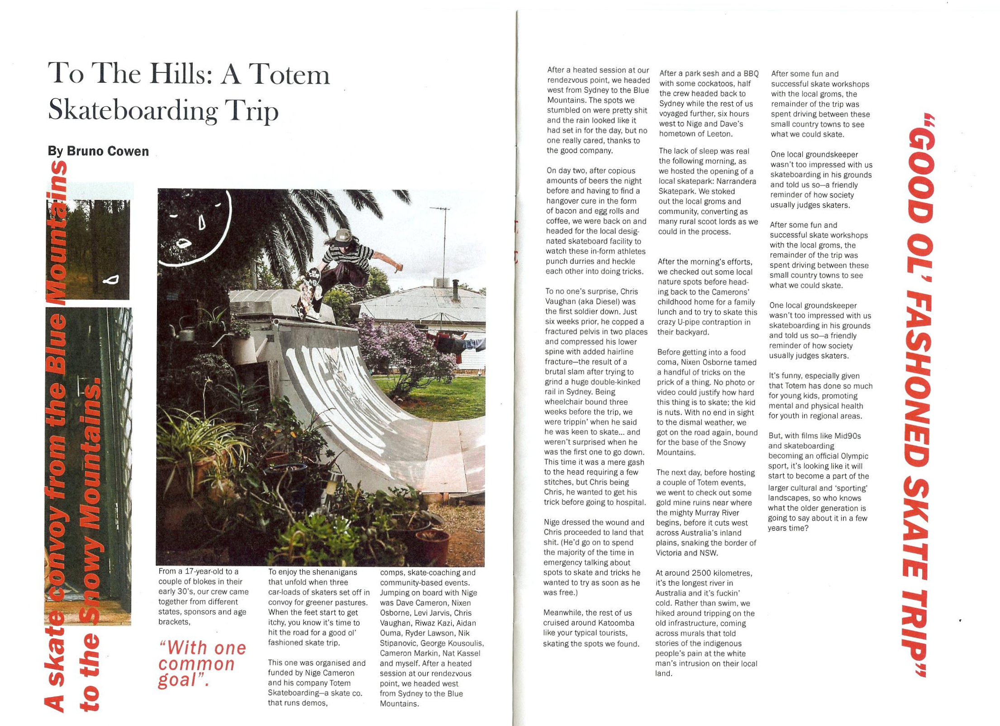
MONSTER CHILDREN NEWSPAPER
*Supervised by Dianne Elderton*
I experimented with creating more dynamic compositions with both the sourced body text and headings. In doing so, I tried creating a more graphic appeal to both the sourced images and typography.
*Supervised by Dianne Elderton*
I experimented with creating more dynamic compositions with both the sourced body text and headings. In doing so, I tried creating a more graphic appeal to both the sourced images and typography.
 MAP OF MELBOURNE ARCHITECTURE
MAP OF MELBOURNE ARCHITECTURE *Supervised by Dianne Elderton*
This print based brief asked for a design of a Melbourne City guide that you would not typically find at a visitor's center in Melbourne. I chose to design my map on Melbourne's iconic architecture. I photographed all the images myself in and around Melbourne's CBD. The information is all sourced online.
 MAP OF MELBOURNE ARCHITECTURE
MAP OF MELBOURNE ARCHITECTURE *Supervised by Dianne Elderton*
I designed my city guide with a minimal aesthetic to give attention to the photography and map. I used a bold typeface as an ode to the depicted architecture. I printed my map on a thicker paper stock, so that the map can be continuously folded and unfolded without it easily tearing. The map folds down to palm size, making it easy for users to carry and use.
 SPACE ODYSSEY BOOK COVERS
SPACE ODYSSEY BOOK COVERS *Supervised by Dianne Elderton*
The book covers were created for a print project around redesigning book covers from a famous book series. I chose Arthur C. Clarke’s ‘Space Odyssey’ book series. I experimented with cutting images from old National Geographic magazines to produce a surreal sci-fi aesthetic to the book covers.
 SPACE ODYSSEY BOOK COVERS
SPACE ODYSSEY BOOK COVERS *Supervised by Dianne Elderton*
The book covers were printed on a thick glossy matte paper stock. This gives the book cover weight, so it wouldn’t tear when placed on a physical book. This also gives the artwork a glossy look reinforcing the idea of space, the surreal nature and aesthetic of my designs.
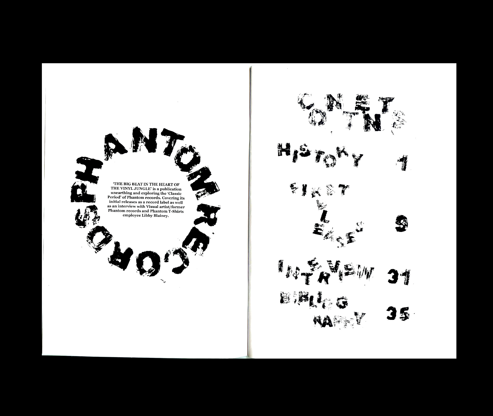
'THE BIG BEAT IN THE HEART OF THE VINYL JUNGLE'
*Supervised by Tristan Ceddia and Rick Milovanovic*
I envisage my outcomes being sold or displayed with some of Phantom Records' potential re-releases in record stores around Australia. I additionally envisage my outcomes being displayed or even sold individually in record stores across Australia. My outcomes will promote the nearly forgotten record label Phantom Records and the music that they signed and supported.
*Supervised by Tristan Ceddia and Rick Milovanovic*
I envisage my outcomes being sold or displayed with some of Phantom Records' potential re-releases in record stores around Australia. I additionally envisage my outcomes being displayed or even sold individually in record stores across Australia. My outcomes will promote the nearly forgotten record label Phantom Records and the music that they signed and supported.
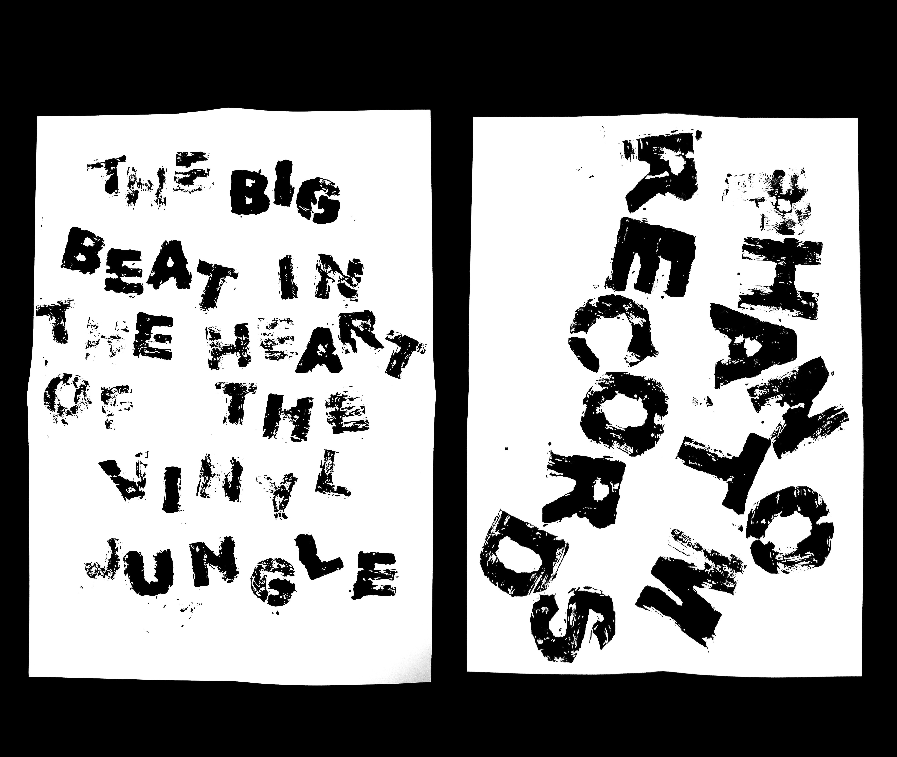
'THE BIG BEAT IN THE HEART OF THE VINYL JUNGLE'
*Supervised by Tristan Ceddia and Rick Milovanovic*
This project is about unearthing the nearly forgotten Australian record label Phantom Records. I conducted research and some interviews unearthing the record label and its history about its ‘Classic Period’. This period was when the Phantom record store developed into a prolific independent record label.
*Supervised by Tristan Ceddia and Rick Milovanovic*
This project is about unearthing the nearly forgotten Australian record label Phantom Records. I conducted research and some interviews unearthing the record label and its history about its ‘Classic Period’. This period was when the Phantom record store developed into a prolific independent record label.
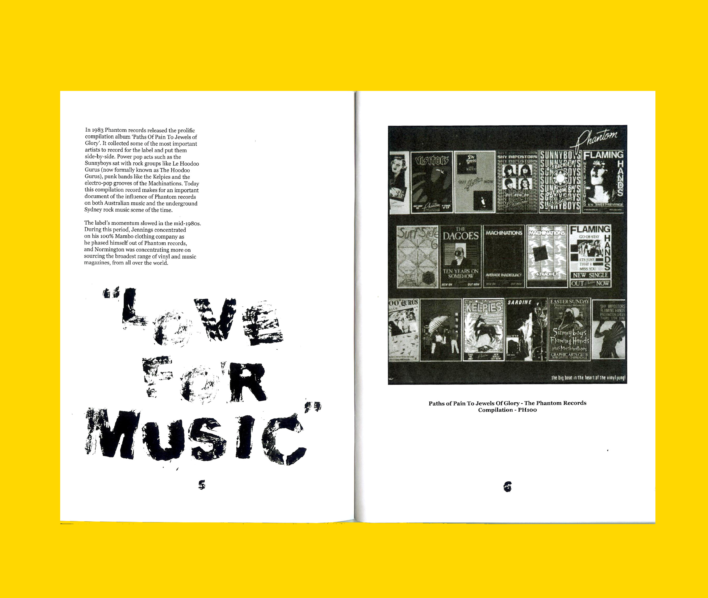
'THE BIG BEAT IN THE HEART OF THE VINYL JUNGLE'
*Supervised by Tristan Ceddia and Rick Milovanovic*
A publication was the most appropriate way to communicate my research and accompanying interviews. I was dealing with and editing a lot of content and information. I creatively edited, organised and designed a dynamic and legible publication. The publication name was inspired by the slogan of Phantom Records, which was typically found on their side a and side b labels. This slogan was also found on their promotional posters ‘The Big Beat In The Heart Of The Vinyl Jungle’.
*Supervised by Tristan Ceddia and Rick Milovanovic*
A publication was the most appropriate way to communicate my research and accompanying interviews. I was dealing with and editing a lot of content and information. I creatively edited, organised and designed a dynamic and legible publication. The publication name was inspired by the slogan of Phantom Records, which was typically found on their side a and side b labels. This slogan was also found on their promotional posters ‘The Big Beat In The Heart Of The Vinyl Jungle’.
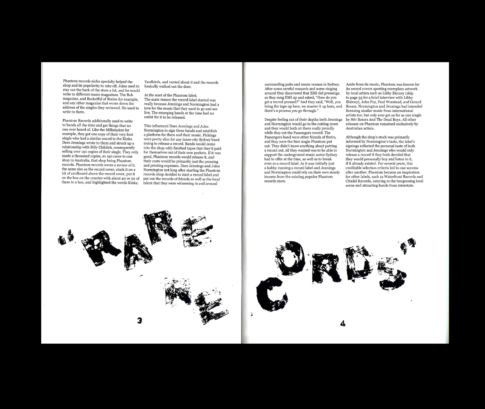
'THE BIG BEAT IN THE HEART OF THE VINYL JUNGLE'
*Supervised by Tristan Ceddia and Rick Milovanovic*
I produced all of my experimental typography with black paint and cut out raised letters. I coupled the bold, 'rough around the edges' typography with well set body text in InDesign. As my content was all about underground music and an independent record label, I wanted to pay a homage to its 'Classic Period'. This influenced me to produce my own tangible type-setting process away from my laptop. I took the role of a graphic designer, similar to how graphic design was before the digital era.
*Supervised by Tristan Ceddia and Rick Milovanovic*
I produced all of my experimental typography with black paint and cut out raised letters. I coupled the bold, 'rough around the edges' typography with well set body text in InDesign. As my content was all about underground music and an independent record label, I wanted to pay a homage to its 'Classic Period'. This influenced me to produce my own tangible type-setting process away from my laptop. I took the role of a graphic designer, similar to how graphic design was before the digital era.
 VISIONS GRAPHIC
VISIONS GRAPHIC My ‘Visions’ graphic was a simple typographic experimentation in Adobe Illustrator, created for fun. This graphic played with the idea of how typography can act as a graphic in its own right. I manipulated and skewed the typography to play around with obscurity and legibility of typography. This resulted in an almost hypnotic and psychedelic look to my graphic.
 TYPE SETTING IN DYMO
TYPE SETTING IN DYMO *Supervised by Tristan Ceddia and Rick Milovanovic*
I created an A2 sized black and white poster. This was entirely designed and 'type set' with a Dymo label maker to produce 100 words of ‘type-set’ text. This poster is communicating the limitations and inconsistencies of the Dymo label and label maker, with a strong punk aesthetic. It explores the idea of subcultures in the 1970s that used the Dymo to produce their own art and rebellious designs. These subcultures informally undertook the role as the graphic designer by moving away from only using the Dymo label in a business and domestic context.
 MENTAL HEALTH WEEK
MENTAL HEALTH WEEK I created this graphic for a voluntary not-for-profit Melbourne based magazine. The graphic was designed in response to an article written about youth mental health. This inspired my thinking to extract ideas and quotes from the article and use those words to form an interesting graphic.
 MAGAZINE FEATURE
MAGAZINE FEATURE My ‘Visions’ graphic was featured in a small print magazine called the ‘Tea and Cake Mag’, which focuses on emerging artists, photographers and designers. This was one of the first times one of my designs was featured and published in a printed magazine.
 LOGO REDESIGN
LOGO REDESIGN I redesigned a logo for a small indepedent Melbourne record label called 'Dead Family Pets Records'. The client asked for a clearer and more legibile redesigned logo. I used their existing typography and dog graphic. I revamped the composition and legibility of the logo, while maintaining a strong DIY aesthetic for their social media and for print purposes. This freelance project was a really exciting opportunity for me as a designer, to use both my typography and layout skills coupled with my strong passion and interest in Melbourne's independent music scene.
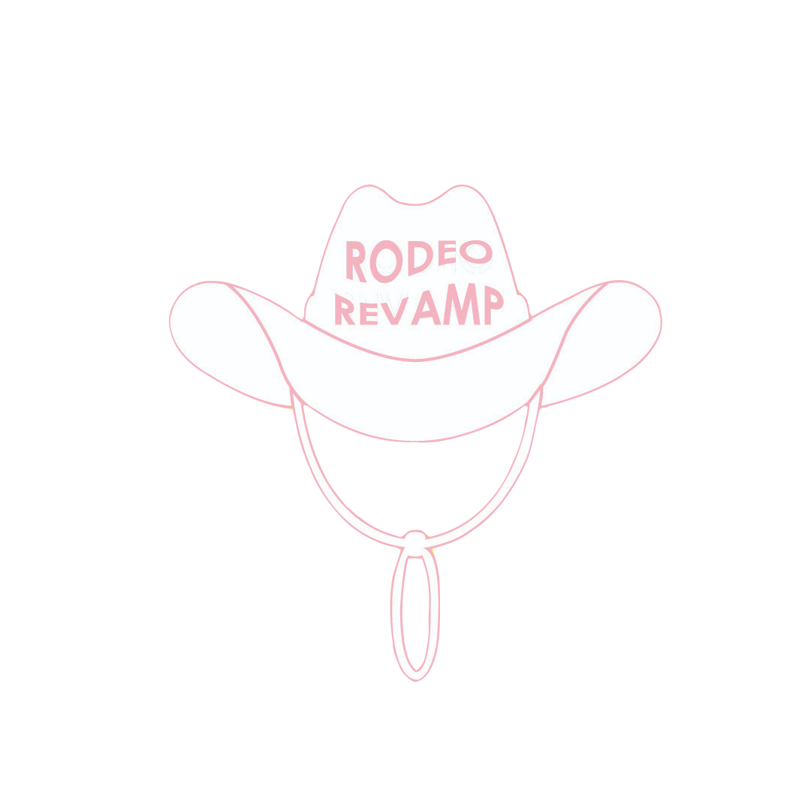
LOGO DESIGN
I designed a logo for a small startup Melbourne based clothing brand called ‘Rodeo Revamp’. This brief was fairly loose and open as the client required a simple and contemporary logo with a strong focus on a western theme. My final design has been used for both their social media and for their clothing.
I designed a logo for a small startup Melbourne based clothing brand called ‘Rodeo Revamp’. This brief was fairly loose and open as the client required a simple and contemporary logo with a strong focus on a western theme. My final design has been used for both their social media and for their clothing.
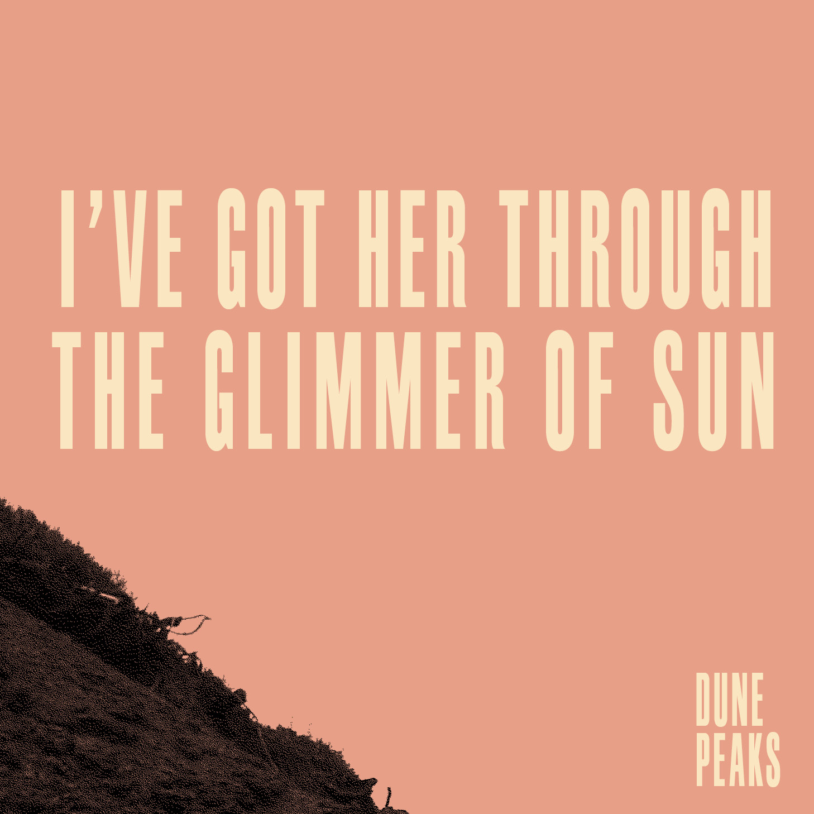
I'VE GOT HER THROUGH THE GLIMMER OF THE SUN SINGLE
I went for a bold, minimalist aesthetic drawing on the light and almost melancholic feel of the single.
I went for a bold, minimalist aesthetic drawing on the light and almost melancholic feel of the single.
 DUNE PEAKS EP COVER
DUNE PEAKS EP COVER The design for 'Eventide and the next light' draws on the soundscapes and sonics of slick drums, bass grooves, washed-out guitar lines sunk in a sea of reverb.
Journey up and over the peaks and dips through a sea spray of sonic plains, go check it out here: https://dunepeaks.bandcamp.com/
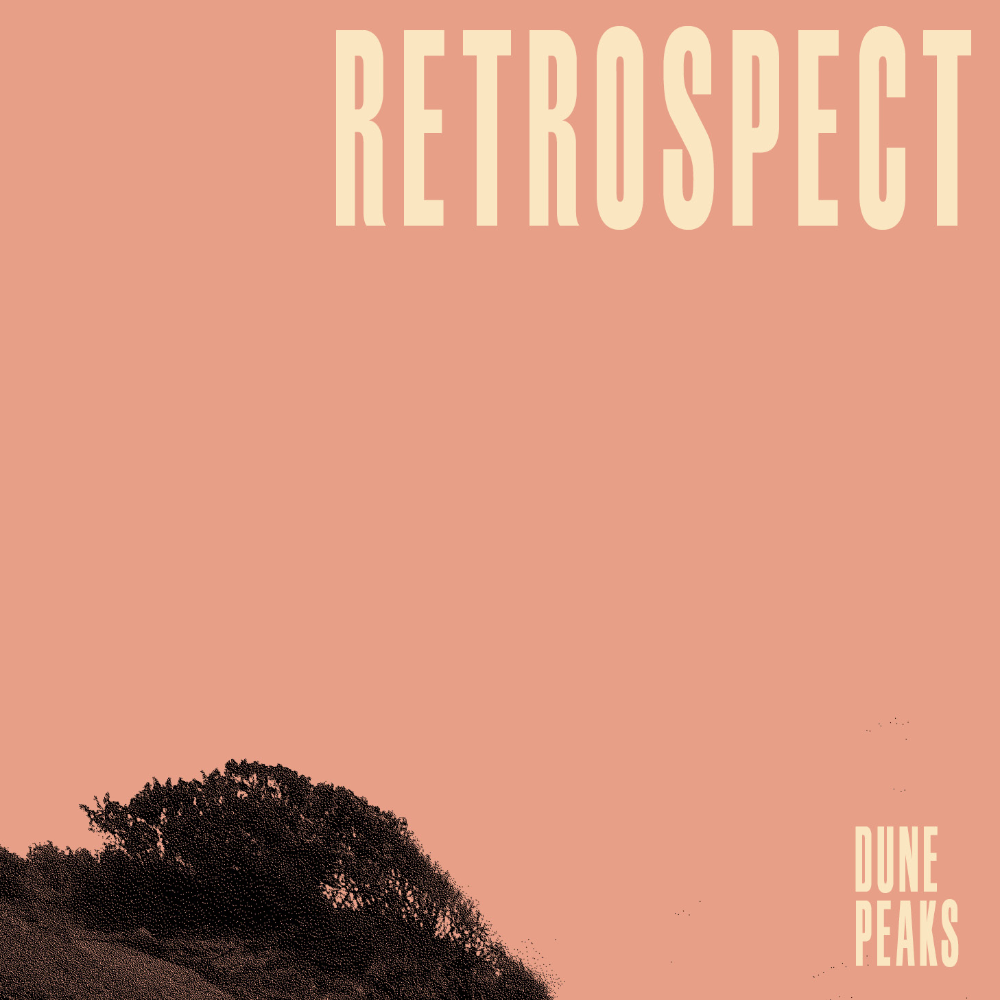
RETROSPECT SINGLE
I went for a bold, minimalist aesthetic drawing on the soundscapes, sonics and feel of the music.
I went for a bold, minimalist aesthetic drawing on the soundscapes, sonics and feel of the music.
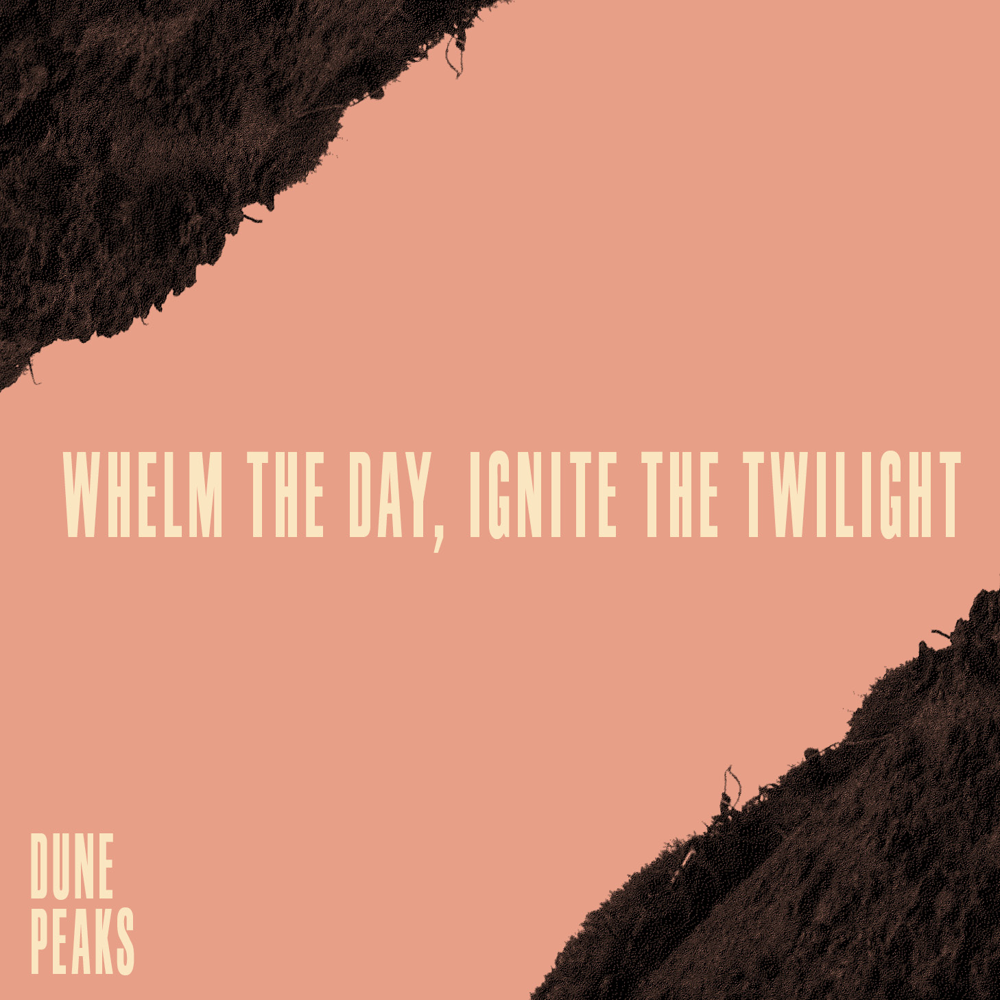
WHELM THE DAY TO IGNITE THE TWILIGHT SINGLE
I went for a bold, minimalist aesthetic drawing on the sonics and style of the music. I went for a psychedelic look and feel to this single cover design.
I went for a bold, minimalist aesthetic drawing on the sonics and style of the music. I went for a psychedelic look and feel to this single cover design.
TESTIMONIAL
"Trying to put an image or visual idea to your music can sometimes be challenging and often lead to something that won't feel right and doesn't make sense. Working with Michael couldn't have been easier and through his vision and hard work, I was able to communicate the feel, sonics and story of the project. He took the time to understand my previous work, the direction of the music and how I could use visual art to complement my work. The level of professionalism that I got from Michael was outstanding I look forward to working with him again on future projects.
Thanks so much Michael!
Gareth Holloway - musician, songwriter, producer and teacher”
"Trying to put an image or visual idea to your music can sometimes be challenging and often lead to something that won't feel right and doesn't make sense. Working with Michael couldn't have been easier and through his vision and hard work, I was able to communicate the feel, sonics and story of the project. He took the time to understand my previous work, the direction of the music and how I could use visual art to complement my work. The level of professionalism that I got from Michael was outstanding I look forward to working with him again on future projects.
Thanks so much Michael!
Gareth Holloway - musician, songwriter, producer and teacher”
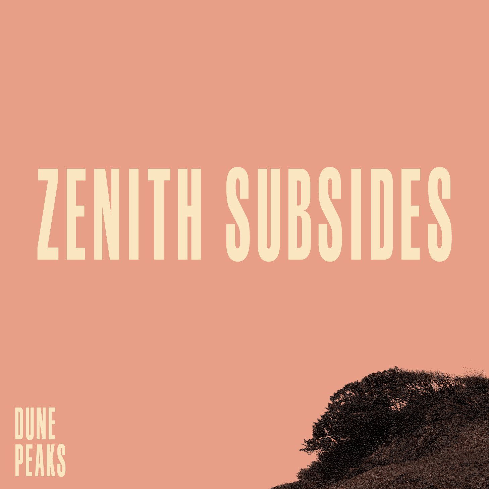
ZENITH SUBSIDES SINGLE
I went for a bold, minimalist aesthetic drawing on the sonics and style of the music. I incorporated elements from the greater EP cover design into my single design for 'Zenith Subsides'.
I went for a bold, minimalist aesthetic drawing on the sonics and style of the music. I incorporated elements from the greater EP cover design into my single design for 'Zenith Subsides'.
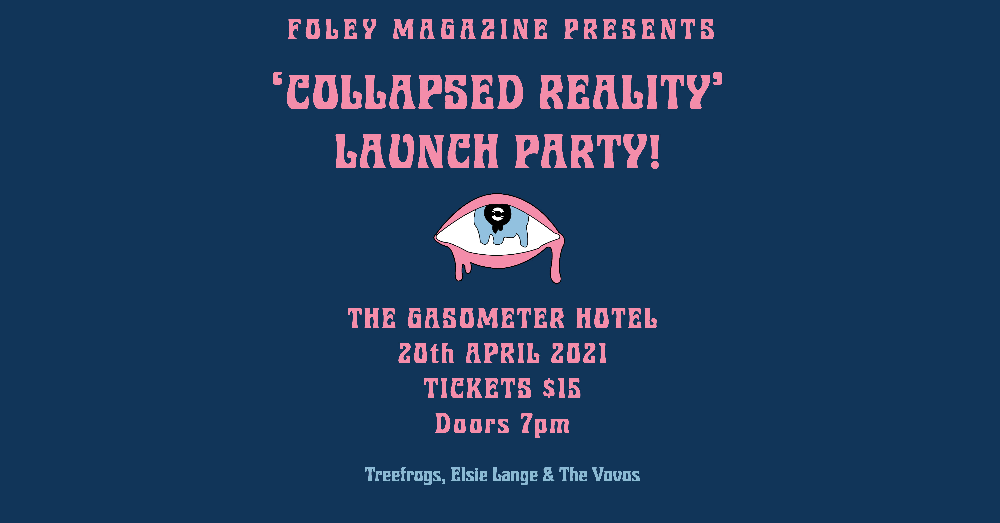
FOLEY MAGAZINE EVENT HEADER
I designed a Facebook banner for Foley Magazine’s magazine launch at the Gasometer Hotel. The designs conveyed a psychedelic aesthetic similar to the themes of the magazine that was being launched.
I extracted simple elements from the poster design to create the event header.
I designed a Facebook banner for Foley Magazine’s magazine launch at the Gasometer Hotel. The designs conveyed a psychedelic aesthetic similar to the themes of the magazine that was being launched.
I extracted simple elements from the poster design to create the event header.
 FOLEY MAGAZINE EVENT A3 POSTER
FOLEY MAGAZINE EVENT A3 POSTER The A3 poster was designed with a simple but heavy psychedelic aesthetic, similar to the aesthetic of Foley Magazine's 3rd edition of their magazine that the event launch was for.
The client was happy with how “efficient” I was and that I was able to capture their vision perfectly.